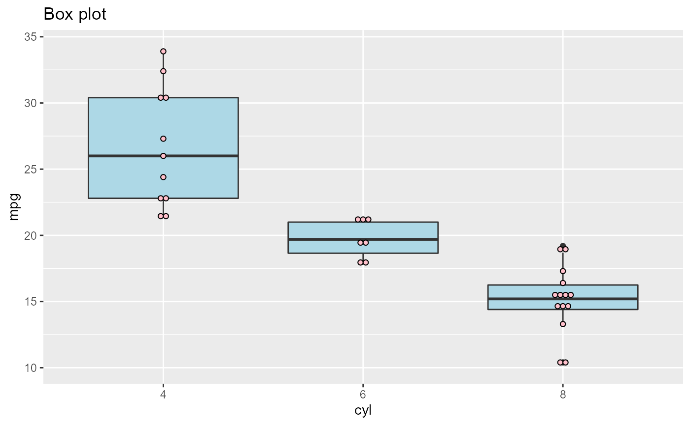
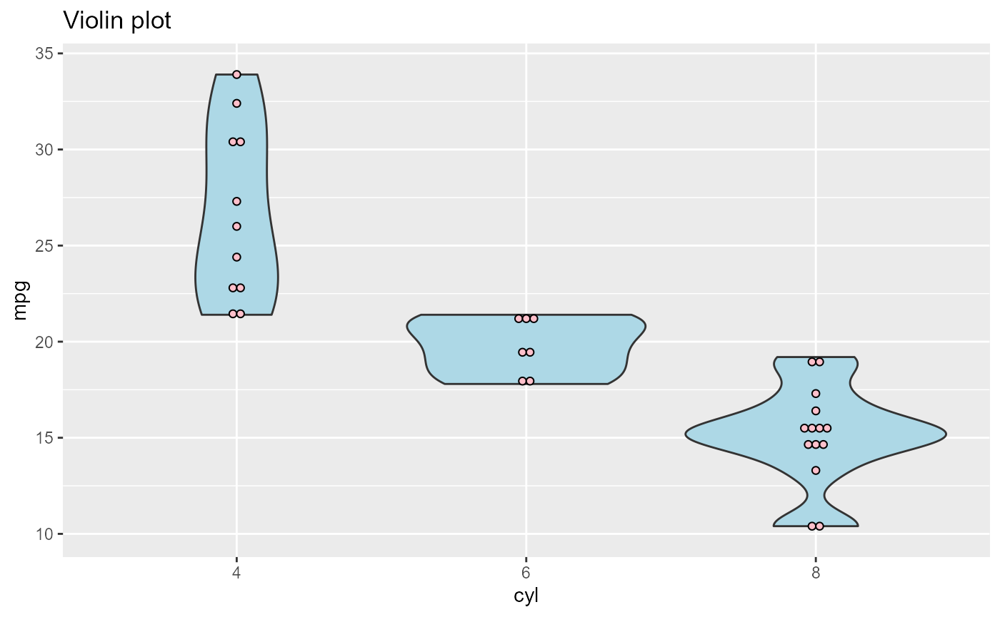
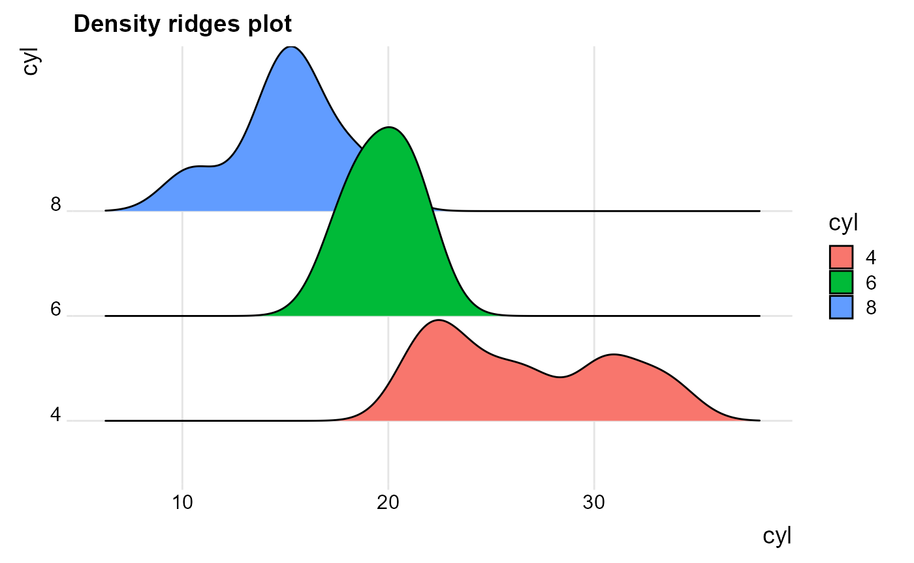
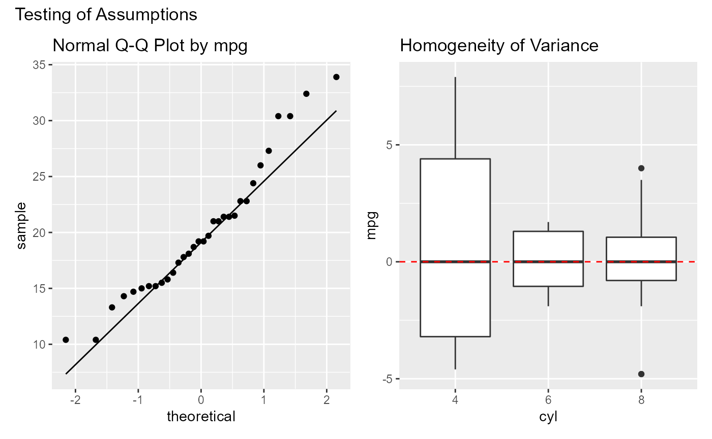
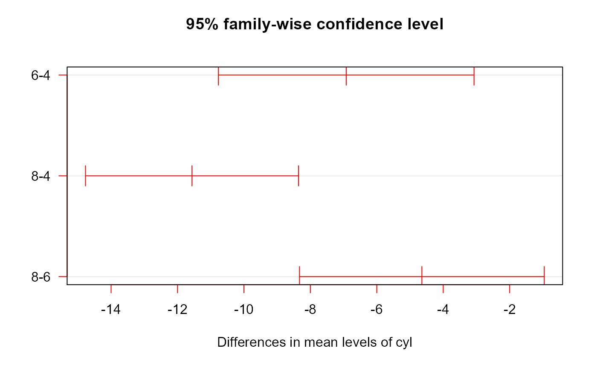

oneway.RmdThe **oneway* package provides a simple interface for completing a one-way Analysis of Variance (ANOVA). This is useful when evaluating mean differences between groups on a quantitative variable.
First the model is fit. In this example, we want to know if there is a difference in fuel efficiency based on the number of cylinders in a car engine. The data come from the mtcars dataset.
Summary statistics and the ANOVA results are printed.
library(oneway) fit <- oneway(mpg ~ cyl, data = mtcars) print(fit) #> #> Summary Statistics #> ====================== #> cyl n mean sd #> 1 4 11 26.66364 4.509828 #> 2 6 7 19.74286 1.453567 #> 3 8 14 15.10000 2.560048 #> #> ANOVA #> ====================== #> #> Call: #> lm(formula = formula, data = data) #> #> Residuals: #> Min 1Q Median 3Q Max #> -5.2636 -1.8357 0.0286 1.3893 7.2364 #> #> Coefficients: #> Estimate Std. Error t value Pr(>|t|) #> (Intercept) 26.6636 0.9718 27.437 < 2e-16 *** #> cyl6 -6.9208 1.5583 -4.441 0.000119 *** #> cyl8 -11.5636 1.2986 -8.905 8.57e-10 *** #> --- #> Signif. codes: 0 '***' 0.001 '**' 0.01 '*' 0.05 '.' 0.1 ' ' 1 #> #> Residual standard error: 3.223 on 29 degrees of freedom #> Multiple R-squared: 0.7325, Adjusted R-squared: 0.714 #> F-statistic: 39.7 on 2 and 29 DF, p-value: 4.979e-09
These results can be summarized using the summary generic function.
summary(fit) #> Analysis of Variance Table #> #> Response: mpg #> Df Sum Sq Mean Sq F value Pr(>F) #> cyl 2 824.78 412.39 39.697 4.979e-09 *** #> Residuals 29 301.26 10.39 #> --- #> Signif. codes: 0 '***' 0.001 '**' 0.01 '*' 0.05 '.' 0.1 ' ' 1
Group differences can be visualized using three types of plot - boxplot, violin plot, and ridges plots.
plot(fit, plot="boxplot")

plot(fit, plot="violin")

plot(fit, plot="density_ridges")

The results assume normality of the outcome variable (mpg) and equal variances on this variable for the three groups. We can test this with the assumptions function.
assumptions(fit) #> #> Normality Testing #> ======================= #> statistic p.value data.name #> W 0.9475647 0.1228814 mpg #> #> Equal Variance Testing #> ======================= #> statistic parameter p.value data.name #> Fligner-Killeen:med chi-squared 6.811309 2 0.03318509 mpg~cyl

Here, we can see the the normality assumption is met, but 4 cylinder cars have greater variance.
The ANOVA test indicates that the groups are different, but not where the differences lie. The posthoc function performs pairwise comparisons, controlling for the number of tests performed.
posthoc(fit)

#> diff lwr upr p adj
#> 6-4 -6.920779 -10.769350 -3.0722086 3.423720e-04
#> 8-4 -11.563636 -14.770779 -8.3564942 2.543980e-09
#> 8-6 -4.642857 -8.327583 -0.9581313 1.122868e-02You can see that all three groups differ, with increased cylinders leading to decreased fuel efficiency.